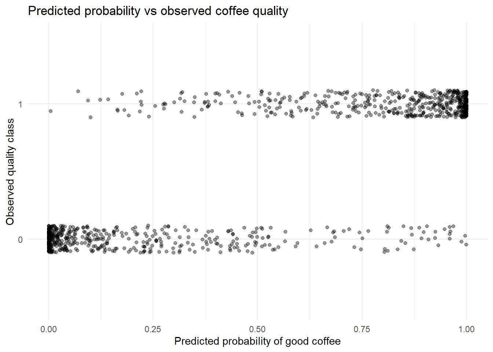

Based on the exploratory analysis, the response variable is approximately balanced, several predictors show clear differences across quality groups, and some continuous variables exhibit skewness or correlation. Therefore, we proceed to fit a binomial Generalised Linear Model (logistic regression) to investigate which factors influence the probability of a coffee batch being classified as good quality.
2 Model Specification
library(tidyverse)
Warning: package 'ggplot2' was built under R version 4.5.2
Warning: package 'tibble' was built under R version 4.5.2
Warning: package 'tidyr' was built under R version 4.5.2
Warning: package 'readr' was built under R version 4.5.2
Warning: package 'purrr' was built under R version 4.5.2
Warning: package 'stringr' was built under R version 4.5.2
Warning: package 'forcats' was built under R version 4.5.2
── Attaching core tidyverse packages ──────────────────────── tidyverse 2.0.0 ──
✔ dplyr 1.1.4 ✔ readr 2.1.6
✔ forcats 1.0.1 ✔ stringr 1.6.0
✔ ggplot2 4.0.1 ✔ tibble 3.3.1
✔ lubridate 1.9.4 ✔ tidyr 1.3.2
✔ purrr 1.2.1
── Conflicts ────────────────────────────────────────── tidyverse_conflicts() ──
✖ dplyr::filter() masks stats::filter()
✖ dplyr::lag() masks stats::lag()
ℹ Use the conflicted package (<http://conflicted.r-lib.org/>) to force all conflicts to become errors
library(naniar)
Warning: package 'naniar' was built under R version 4.5.2
library(ggplot2)library(tidyr)library(skimr)
Warning: package 'skimr' was built under R version 4.5.2
Attaching package: 'skimr'
The following object is masked from 'package:naniar':
n_complete
library(knitr)
Warning: package 'knitr' was built under R version 4.5.2
library(dplyr)library(kableExtra)
Attaching package: 'kableExtra'
The following object is masked from 'package:dplyr':
group_rows
library(gridExtra)
Attaching package: 'gridExtra'
The following object is masked from 'package:dplyr':
combine
Coefficient estimates for the initial logistic regression model
Term
Estimate
Std. Error
z value
p value
(Intercept)
-111.609
7.627
-14.634
0.000
aroma
4.481
0.629
7.123
0.000
flavor
7.128
0.772
9.232
0.000
acidity
3.083
0.581
5.310
0.000
log_defects
0.113
0.123
0.924
0.355
altitude_groupmiddle altitude
-0.102
0.419
-0.244
0.808
altitude_groupmissing altitude
0.558
0.420
1.328
0.184
altitude_groupupper-middle altitude
0.315
0.362
0.870
0.384
altitude_groupupper altitude
0.842
0.361
2.335
0.020
harvested2011
0.488
0.936
0.522
0.602
harvested2012
-0.144
0.773
-0.186
0.852
harvested2013
0.039
0.783
0.050
0.960
harvested2014
0.358
0.781
0.458
0.647
harvested2015
0.027
0.792
0.034
0.973
harvested2016
0.612
0.807
0.758
0.448
harvested2017
0.336
0.825
0.408
0.684
harvested2018
1.996
1.161
1.718
0.086
A binomial GLM with logit link was fitted to investigate how sensory attributes, defect counts, altitude groups and harvest year influence the probability of a coffee batch being classified as good quality.
To assess whether the predictors included in the initial logistic regression model exhibit problematic multicollinearity, Variance Inflation Factors (VIFs) were calculated. This is particularly relevant because the exploratory analysis suggested relatively strong positive correlations among aroma, flavor and acidity.
4 Multicollinearity check
library(car)
Loading required package: carData
Attaching package: 'car'
The following object is masked from 'package:dplyr':
recode
The following object is masked from 'package:purrr':
some
Variance Inflation Factors for the initial logistic regression model
Variable
GVIF
Df
GVIF..1..2.Df..
aroma
aroma
1.080
1
1.039
flavor
flavor
1.135
1
1.065
acidity
acidity
1.071
1
1.035
log_defects
log_defects
1.087
1
1.043
altitude_group
altitude_group
1.287
4
1.032
harvested
harvested
1.434
8
1.023
Table X presents the VIF values for all predictors included in the initial model. Overall, the sensory variables show comparatively larger VIF values than the remaining predictors, which is consistent with the correlation patterns observed in the exploratory analysis. These results suggest that multicollinearity should be taken into account in subsequent model refinement.
5 Visualising model fit
5.1 Fitted Probability vs Observed
model_data$pred_prob <-predict(model_full, type ="response")ggplot(model_data, aes(x = pred_prob, y =factor(quality_bin))) +geom_jitter(height =0.1, alpha =0.4) +labs(title ="Predicted probability vs observed coffee quality",x ="Predicted probability of good coffee",y ="Observed quality class" ) +theme_minimal()

5.2 Residual Plot
res <-residuals(model_full, type ="deviance")fit <-fitted(model_full)ggplot(data.frame(fit, res), aes(x = fit, y = res)) +geom_point(alpha =0.4) +geom_smooth(se =FALSE) +labs(title ="Deviance residuals vs fitted values",x ="Fitted probability",y ="Deviance residuals" ) +theme_minimal()
`geom_smooth()` using method = 'gam' and formula = 'y ~ s(x, bs = "cs")'
Preliminary comparison of logistic regression models
Model
AIC
Sensory-only model
653.82
Full model
657.59
A preliminary comparison between a sensory-only model and the full model suggests that including defects, altitude and harvest year may improve model fit.